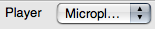
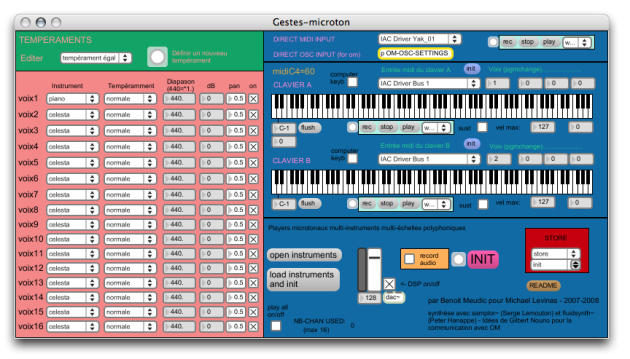

OpenMusic DocumentationHiérarchie de section : OM 6.6 User Manual > Score Objects > Score Players
OpenMusic DocumentationHiérarchie de section : OM 6.6 User Manual > Score Objects > Score Players
Navigation : page précédente | page suivante
Attention, votre navigateur ne supporte pas le javascript ou celui-ci à été désactivé. Certaines fonctionnalités de ce guide sont restreintes.
Score Players
OM mainly relies on the MidiShare libray for MIDI playback and rendering of score objects.
It is possible, however, to install additional players and use them to play the core objects.
Default MIDI Playback
In order to change the default player of an object, select use the |

|
The MicroPlayer is the only available alternative player to date. |

Selecting the MicroPlayer in the score editors.
|
The MicroPlayer
MicroPlayer is an independent application which must be installed separately. It is distributed in the IRCAM forumnet webpage and is available on MacOSX only.
At selecting the MicroPlayer for the first time in OM, the application will take a while in starting up and initializing. It can then be put to the background.

The MicroPlayer interface.Zoom
{kind=link}
MicroPlayer communicates with OM via OSC.
The MIDI/OSC tab in the OpenMusic Preferences allows to set the path to the application and the OSC ports to use for communication (default OM preferences should be compatible wirth the default MicroPlayer ports).
Références :
Plan :
- OpenMusic Documentation
- OM 6.6 User Manual
- Introduction
- System Configuration and Installation
- Going Through an OM Session
- The OM Environment
- Visual Programming I
- Visual Programming II
- Basic Tools
- Score Objects
- Presentation
- Rhythm Trees
- Score Players
- Score Editors
- Quantification
- Export / Import
- Maquettes
- Sheet
- MIDI
- Audio
- SDIF
- Lisp Programming
- Errors and Problems
- OpenMusic QuickStart
Navigation : page précédente | page suivante
A propos...(c) Ircam - Centre Pompidou